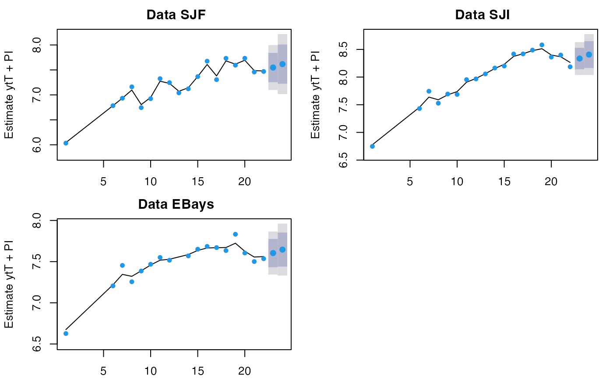
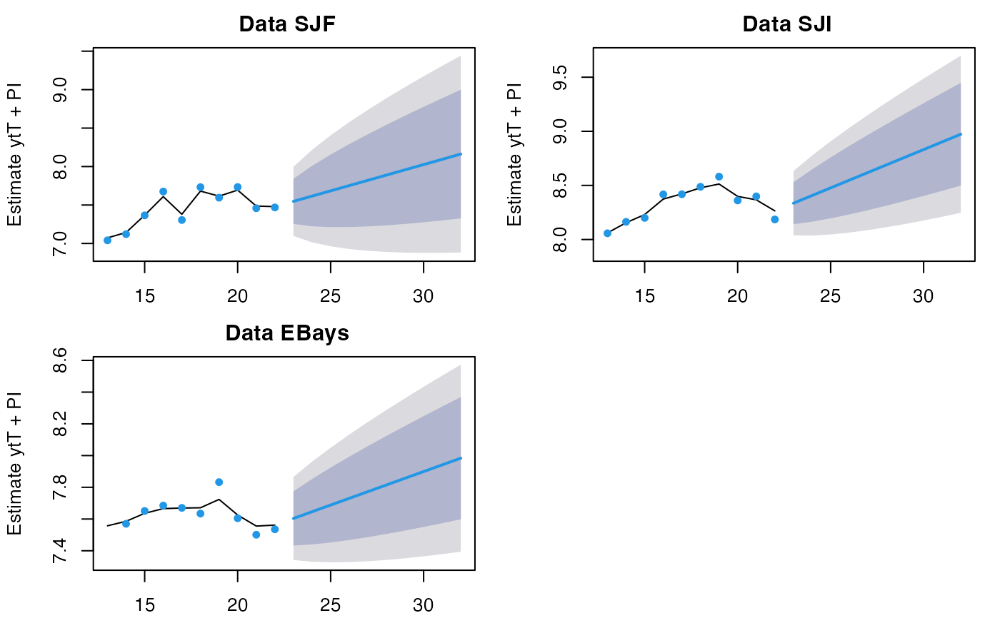

forecast function for marssMLE objects
forecast_marssMLE.RdMARSS() outputs marssMLE objects. forecast(object), where object is marssMLE object, will return the forecasts of \(\mathbf{y}_t\) or \(\mathbf{x}_t\) for h steps past the end of the model data. forecast(object) returns a marssPredict object which can be passed to plot.marssPredict for automatic plotting of the forecast. forecast.marssMLE() is used by predict.marssMLE() to generate forecasts.
This is a method for the generic forecast function in the generics package. It is written to mimic the behavior and look of the forecast package.
Arguments
- object
A
marssMLEobject.- h
Number of steps ahead to forecast.
newdatais for the forecast, i.e. for the \(h\) time steps after the end of the model data. If there are covariates in the model, \(\mathbf{c}_t\) or \(\mathbf{d}_t\), thennewdatais required. See details.- level
Level for the intervals if
interval != "none".- type
The default for observations would be
type="ytT"and for the states would betype="xtT", i.e. using all the data. Other possible forecasts are provided for completeness but would in most cases be identical (see details).- newdata
An optional list with matrices for new covariates \(\mathbf{c}_t\) or \(\mathbf{d}_t\) to use for the forecasts. \(\mathbf{c}_t\) or \(\mathbf{d}_t\) must be in the original model and have the same matrix rows and columns as used in the
MARSS()call but the number of time steps can be different (and should be equal toh).- interval
If
interval="confidence", then the standard error and confidence interval of the expected value of \(\mathbf{y}_t\) (type="ytT") or \(\mathbf{x}_t\) (type="xtT") is returned.interval="prediction"(default) returns prediction intervals which include the uncertainty in the expected value and due to observation error (the \(\mathbf{R}\) in the \(\mathbf{y}\) equation). Note, in the context of a MARSS model, only confidence intervals are available for the states (the \(\mathbf{x}\)).- fun.kf
Only if you want to change the default Kalman filter. Can be ignored.
- ...
Other arguments. Not used.
Value
A list with the following components:
- method
The method used for fitting, e.g. "kem".
- model
The
marssMLEobject passed intoforecast.marssMLE().- newdata
The
newdatalist if passed intoforecast.marssMLE().- level
The confidence
levelpassed intoforecast.marssMLE().- pred
A data frame the forecasts along with the intervals.
- type
The
type("ytT" or "xtT") passed intoforecast.marssMLE().- t
The time steps used to fit the model (used for plotting).
- h
The number of forecast time steps (used for plotting).
Details
The type="ytT" forecast for \(T+i\) is
$$\mathbf{Z}\mathbf{x}_{T+i}^T + \mathbf{a} + \mathbf{D}\mathbf{d}_{T+i}$$
where \(\mathbf{Z}\), \(\mathbf{a}\) and \(\mathbf{D}\) are estimated from the data from \(t=1\) to \(T\). If the model includes \(\mathbf{d}_t\) then newdata with d must be passed in. Either confidence or prediction intervals can be shown. Prediction intervals would be the norm for forecasts and show the intervals for new data which based on the conditional variance of \(\mathbf{Z}\mathbf{X}_{T+i} + \mathbf{V}_{T+i}\). Confidence intervals would show the variance of the mean of the new data (such as if you ran a simulation multiple times and recorded only the mean observation time series). It is based on the conditional variance of \(\mathbf{Z}\mathbf{X}_{T+i}\). The intervals shown are computed with fitted().
The type="xtT" forecast for \(T+i\) is
$$\mathbf{B}\mathbf{x}_{T+i-1}^T + \mathbf{u} + \mathbf{C}\mathbf{c}_{T+i}$$
where \(\mathbf{B}\) and \(\mathbf{u}\) and \(\mathbf{C}\) are estimated from the data from \(t=1\) to \(T\) (i.e. the estimates in the marssMLE object). If the model includes \(\mathbf{c}_t\) then newdata with c must be passed in. The only intervals are confidence intervals which based on the conditional variance of \(\mathbf{B}\mathbf{X}_{T+i-1} + \mathbf{W}_{T+i}\). If you pass in data for your forecast time steps, then the forecast will be computed conditioned on the original data plus the data in the forecast period. The intervals shown are computed with the Kalman smoother (or filter if type="xtt" or type="xtt1" specified) via tsSmooth().
If the model has time-varying parameters, the parameter estimates at time \(T\) will be used for the whole forecast. If new data c or d are passed in, it must have h time steps.
Note: y in newdata. Data along with covariates can be passed into newdata. In this case, the data in newdata (\(T+1\) to \(T+h\)) are conditioned on for the expected value of \(\mathbf{X}_t\)
but parameters used are only estimated using the data in the marssMLE object (\(t=1\) to \(T\)). If you include data in newdata, you need to decide how to condition on that
new data for the forecast. type="ytT" would mean that the \(t=T+i\) forecast is conditioned on all the data, \(t=1\) to \(T+h\), type="ytt" would mean that the
\(t=T+i\) forecast is conditioned on the data, \(t=1\) to \(T+i\), and type="ytt1" would mean that the \(t=T+i\) forecast is conditioned on the data, \(t=1\) to \(T+i-1\). Because MARSS models can be used in all sorts of systems, the \(\mathbf{y}\) part of the MARSS model might not be "data" in the traditional sense. In some cases, one of the \(\mathbf{y}\) (in a multivariate model) might be a known deterministic process or it might be a simulated future \(\mathbf{y}\) that you want to include. In this case the
\(\mathbf{y}\) rows that are being forecasted are NAs and the \(\mathbf{y}\) rows that are known are passed in with newdata.
Examples
# More examples are in ?predict.marssMLE
dat <- t(harborSealWA)
dat <- dat[2:4,] #remove the year row
fit <- MARSS(dat, model=list(R="diagonal and equal"))
#> Success! abstol and log-log tests passed at 44 iterations.
#> Alert: conv.test.slope.tol is 0.5.
#> Test with smaller values (<0.1) to ensure convergence.
#>
#> MARSS fit is
#> Estimation method: kem
#> Convergence test: conv.test.slope.tol = 0.5, abstol = 0.001
#> Estimation converged in 44 iterations.
#> Log-likelihood: 17.84491
#> AIC: -15.68982 AICc: -10.45173
#>
#> Estimate
#> R.diag 0.00582
#> U.X.SJF 0.06833
#> U.X.SJI 0.07084
#> U.X.EBays 0.04221
#> Q.(X.SJF,X.SJF) 0.04150
#> Q.(X.SJI,X.SJI) 0.01271
#> Q.(X.EBays,X.EBays) 0.00807
#> x0.X.SJF 5.97602
#> x0.X.SJI 6.70656
#> x0.X.EBays 6.63306
#> Initial states (x0) defined at t=0
#>
#> Standard errors have not been calculated.
#> Use MARSSparamCIs to compute CIs and bias estimates.
#>
# 2 steps ahead forecast
fr <- forecast(fit, type="ytT", h=2)
plot(fr)

# forecast and only show last 10 steps of original data
fr <- forecast(fit, h=10)
plot(fr, include=10)
